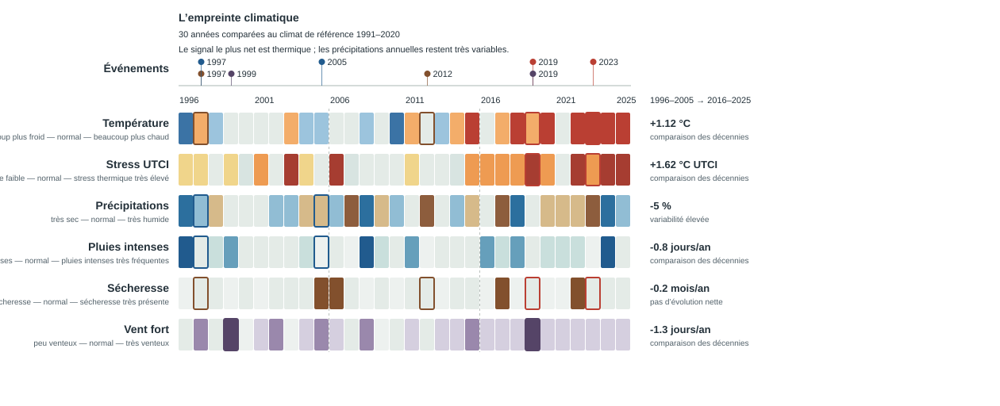

L’empreinte climatique
Données réelles de réanalyse CDS. Point demandé : 44,064654 N, 3,682935 E. Les mailles climatiques utilisées sont documentées dans le JSON ; elles ne représentent pas une mesure à l’échelle de 100 m.
30 années comparées au climat de référence 1991–2020.

Les données structurées et la provenance sont disponibles dans climate-fingerprint.json.